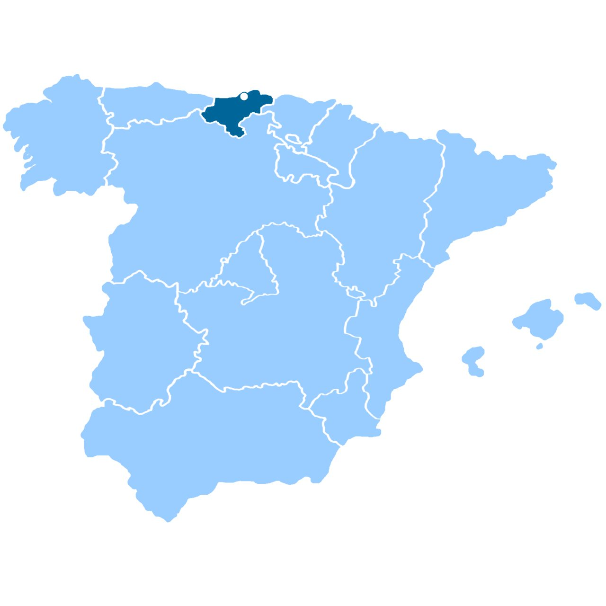

Situación geográfica y límites
Criterios: PN 1.1, PN 1.2
🤔 Pienso5 min
Qué hago aquí: Piensa un momento y contesta con lo que ya sabes. No pasa nada si no lo sabes: es para empezar.
Sin mirar el libro, dibuja en tu cuaderno la silueta de España y marca dónde crees que está Cantabria. Escribe al lado el nombre de las comunidades que la rodean.
✏️ Puedes responder escribiendo, con un dibujo o un esquema, o contándolo en voz alta.
📖 Leo y aprendo15 min
Qué hago aquí: Lee despacio, mira los dibujos y los ejemplos, y quédate con la idea clave del final.
Cantabria es una comunidad autónoma del norte de España. Es uniprovincial: tiene una sola provincia, y su capital es Santander. Hasta 1982 se llamaba provincia de Santander; ese año entró en vigor su Estatuto de Autonomía.

Foto: SantiagoFrancoRamos · CC BY-SA 4.0 · Spain Cantabria.png
Sus límites son el mar Cantábrico al norte, Asturias al oeste, Castilla y León al sur (provincias de León, Palencia y Burgos) y el País Vasco al este (Bizkaia).
Mar Cantábrico
Asturias
Castilla y León
País Vasco
✏️ Hago25 min
Qué hago aquí: Haz las actividades en orden. Empieza siempre por las básicas.
Cantabria es una comunidad autónoma uniprovincial. Explica qué significa y nombra otras dos comunidades que también lo sean. ¿Qué documento convirtió la antigua provincia de Santander en comunidad autónoma y en qué año?
Describe la situación de Cantabria como lo haría un mapa: usa los cuatro puntos cardinales y nombra, en cada uno, la comunidad y la provincia (o el mar) con que limita.
Con los datos de Cantabria en cifras, calcula la densidad de población de Cantabria (habitantes ÷ km²). La de España es de unos 95 hab/km². ¿Está Cantabria más o menos poblada que la media? Indica la operación.
El Valle de Villaverde es un enclave. Piensa en la vida diaria de sus vecinos: escribe dos problemas prácticos que puede causar (sanidad, colegio, carreteras, emergencias…) y cómo crees que se resuelven.
Unos límites son naturales (siguen un mar, una cumbre o un río) y otros son históricos (los trazaron las personas). Observa el mapa físico de la ficha 3 y el de España: ¿qué límite de Cantabria es claramente natural? ¿Cuál crees que lo es solo en parte? Justifica tu respuesta.
Relaciona la situación de Cantabria con su forma de vida: elige tres rasgos de su situación (mar al norte, cordillera al sur, entre Asturias y el País Vasco…) y explica qué actividad económica o qué costumbre favorece cada uno.
Los nombres de lugar (topónimos) también son patrimonio: Cantabria, mar Cantábrico, Liébana, Trasmiera… ¿Por qué crees que conviene conservar un topónimo antiguo aunque nadie sepa ya qué significa? Da dos argumentos.
🚀 Amplío (si quieres saber más)
Qué hago aquí: ¿Has terminado? Lee la curiosidad o elige el reto. Es voluntario.
Busca la latitud de Santander y localiza dos ciudades de otros continentes que estén a una latitud parecida (por ejemplo, Toronto en Canadá o Vladivostok en Rusia). Busca su temperatura media de enero y compárala con la de Santander (unos 10 ºC). Si están a la misma distancia del ecuador, ¿por qué es tan distinta? Explica el papel del océano, de las corrientes marinas (la corriente del Golfo) y de la distancia al mar.
✅ Compruebo5 min
Qué hago aquí: Contesta sin mirar la ficha y marca cómo lo llevas.